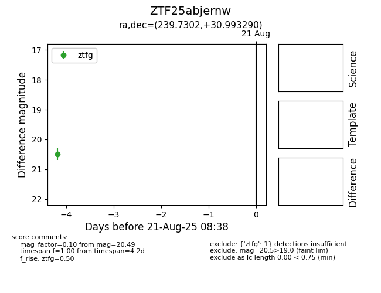

Target ZTF25abjernw at 2025-08-21 08:38, see:
FINK: fink-portal.org/ZTF25abjernw
Lasair: lasair-ztf.lsst.ac.uk/objects/ZTF25abjernw
ALeRCE: alerce.online/object/ZTF25abjernw
alt names
ZTF25abjernw (ztf,alerce)
coordinates:
equatorial (ra, dec) = (239.7302,+30.99329)
galactic (l, b) = (49.9146,+49.14547)
photometry
last ztfg=20.49
1 ztfg detections
